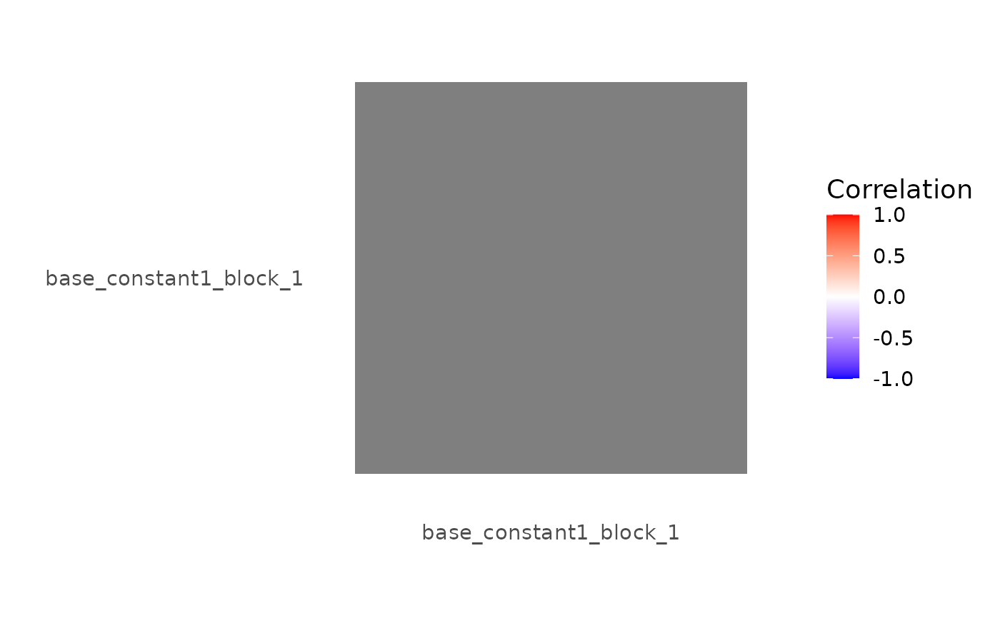

Generates a correlation heatmap of the columns in a baseline_model's design matrix.
Usage
# S3 method for class 'baseline_model'
correlation_map(
x,
method = c("pearson", "spearman"),
half_matrix = FALSE,
absolute_limits = TRUE,
...
)Examples
sframe <- fmrihrf::sampling_frame(blocklens = 5, TR = 1)
bmod <- baseline_model(sframe = sframe)
if (requireNamespace("ggplot2", quietly = TRUE)) correlation_map(bmod)
#> Warning: the standard deviation is zero
